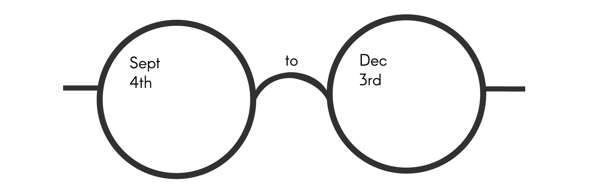

-

Number of Steps
My weekly schedule remains pretty much the same with my daily life revolving around school and work. The Diverging Stack chart is used to show the relationship between each "Days of the Week."
Weekly Steps
Unfortunately, my schedule may change on holidays. When there are breaks, I tend to go shopping or work instead. Therefore, I also use a pie chart to give an overview of this entire semester. All the portions of the pie look similar, but if I check closely, the 4 days (Tues, Thurs, Fri, Sun) that I have classes actually have the highest percentage of steps. For the days which I don't have school, I either work or study at a fixed location.
Screen Time
Looking at the chart, I use my phone nearly one third of the time. However, if I don't count the time that I am asleep (8hrs), I literally use my phone for half of my daytime. My screen time drops when it's toward the end of the semester, starting week 11 because of final projects.
Miles Traveled Biweekly
The distance I traveled doesn't differ much between these weeks. But I happen to travel the least on the last two weeks dating back from Nov 13 - 26, which is approaching final projects.